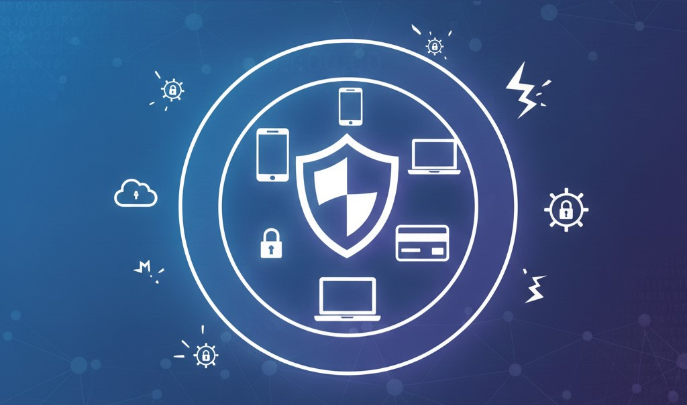
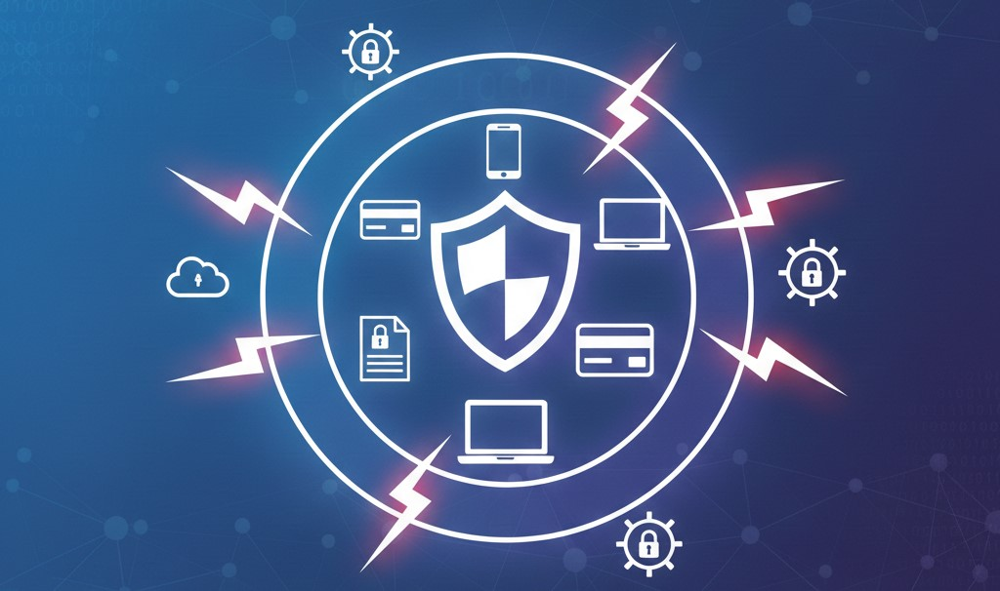
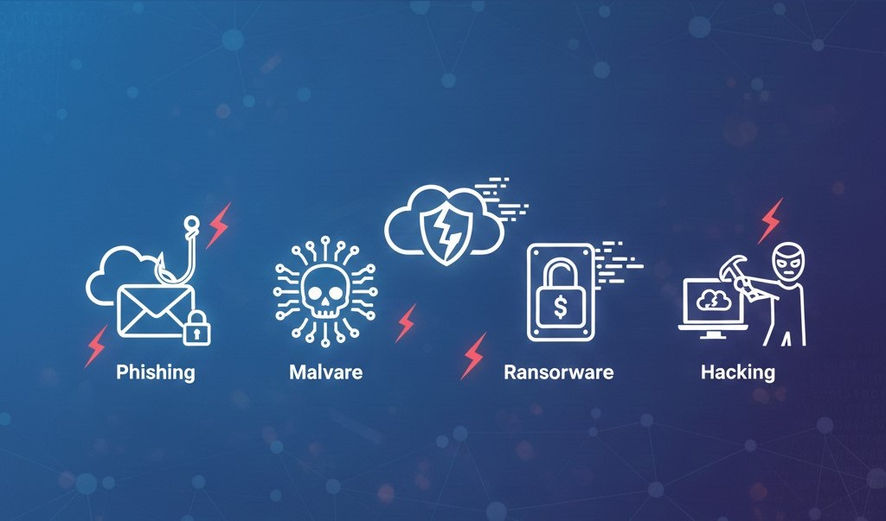
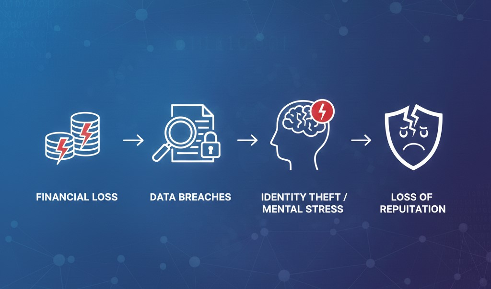
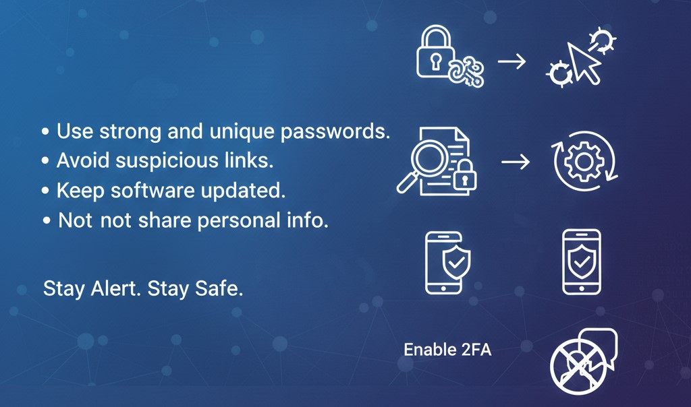

Cyber Safety
Staying safe, secure and responsible in the digital world
What is Cyber Safety?

Cyber Safety refers to the safe and responsible use of the internet,
computers, mobile devices and digital platforms to protect personal data and online identity.
It focuses on preventing unauthorized access, data theft and misuse of information.
Cyber safety helps users stay protected from cyber crimes such as hacking, phishing,
online fraud and malware attacks.
With the increasing use of technology in education, communication and banking,
cyber safety has become very important.
It teaches people how to behave responsibly on online platforms and social media.
Cyber safety also involves securing devices using strong passwords, antivirus software
and privacy settings.
By following cyber safety practices, users can browse the internet safely
and protect themselves from digital threats.
Why is Cyber Safety Important?

Cyber Safety is important because most personal, academic and financial
activities are now performed online.
People share sensitive information such as passwords, bank details and personal data
on digital platforms.
Without proper cyber safety, this information can be stolen or misused by cyber criminals.
Cyber safety helps prevent identity theft, online scams and financial loss.
It also protects organizations from data breaches and cyber attacks.
Maintaining cyber safety builds trust in digital systems and online services.
It ensures privacy, security and smooth functioning of digital technology.
Practicing cyber safety reduces risks and promotes confidence while using the internet.
Types of Cyber Attacks

Cyber Attacks are harmful activities carried out by attackers to damage systems
or steal sensitive information.
There are different types of cyber attacks that target users in various ways.
Some common types of cyber attacks include:
• Phishing: Fake emails or messages that trick users into sharing personal information.
• Malware: Harmful software that damages devices or steals data.
• Ransomware: Attacks that lock data and demand money to restore access.
• Hacking: Unauthorized access to accounts or computer systems.
• Denial of Service (DoS): Attacks that disrupt online services.
These cyber attacks can target individuals, businesses and even governments.
Understanding different types of cyber attacks helps users stay alert and protected.
Effects of Cyber Attacks

Cyber Attacks can have serious effects on individuals and organizations.
One major effect is financial loss due to online fraud and theft.
Cyber attacks can also cause data breaches, leading to loss of important
and confidential information.
Victims may suffer from identity theft and misuse of personal data.
Cyber attacks can damage reputation and trust, especially for businesses.
They may also cause mental stress, fear and anxiety among users.
In some cases, cyber attacks disrupt essential services like banking,
healthcare and communication.
These effects highlight the need for strong cyber safety measures.
Cyber Safety Tips

Following Cyber Safety Tips can greatly reduce the risk of cyber attacks.
Users should create strong and unique passwords for different accounts.
Personal information should never be shared with unknown sources online.
Suspicious links, emails and messages should be avoided to prevent phishing attacks.
Devices should be protected using antivirus software and regular updates.
Two-factor authentication (2FA) should be enabled whenever possible.
Public Wi-Fi networks should be used carefully.
Users should always log out from accounts on shared devices.
Staying alert and informed is the key to staying safe in the digital world.